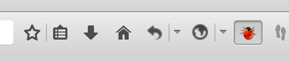
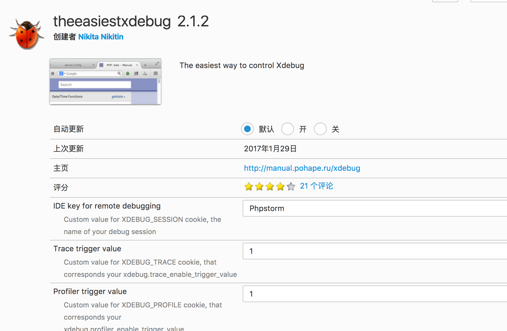
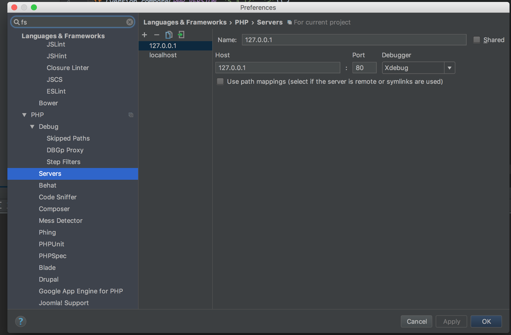
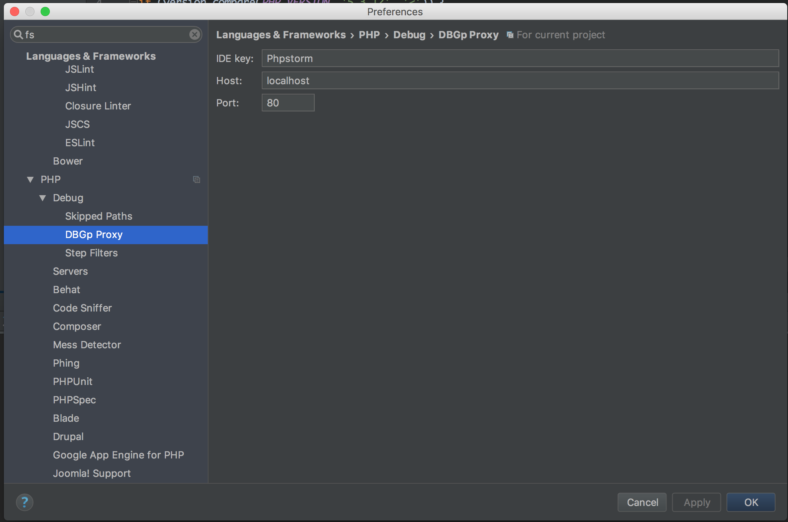
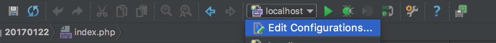
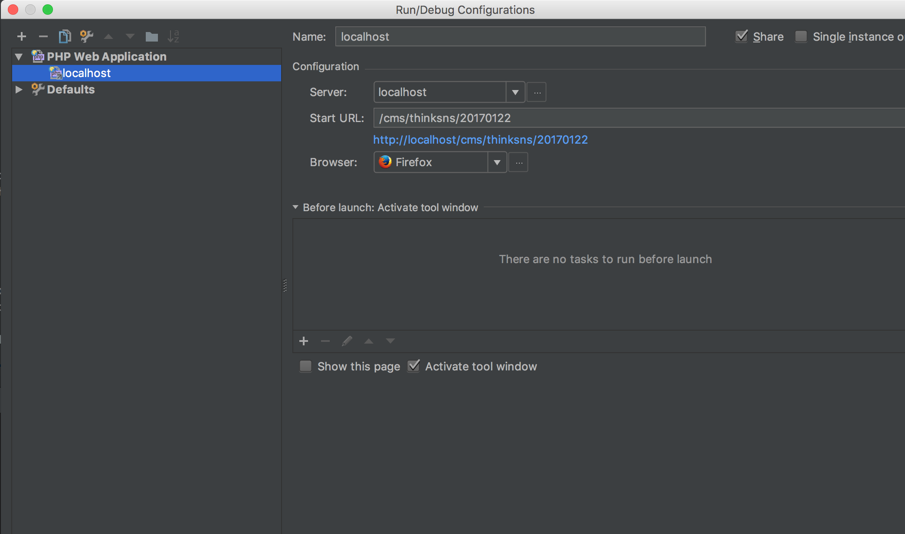

【OTHERS】php代码审计前的准备
概述
所谓“工欲善其事,必先利其器”，在代码审计前，我们需要准备提高我们审计效率的工具。
环境
- Mac
- xampp(可以用phpstudy或者是其他集成环境代替)
- Navicat Premium(个人认为Mac下最好的数据库管理工具，学生党只能用**,有能力尽量支持正版)
- phpstorm(这里的IDE用的是我自己比较习惯的，也可以使用其他你比较熟悉的)
- xdebug(用来动态调试)
- 终端
- 浏览器(firefox、chrome,这里使用firefox,hackbar是个好东西)
安装上述的软件之类的就不说了，下文主要是动态调试环境搭建。
动态调试环境
php添加xdebug配置
xampp的php.ini位于/install/path/etc/php.ini，在配置文件最后添加上
|
|
so文件是xampp自带的，mac下的配置可以直接copy我的
保存后重启apache
firefox安装xdebug扩展
firefox下的xdebug扩展叫 the easiest xdebug，搜索一下安装
安装完成后点亮工具栏上的甲虫，开启调试

设置key,更php配置文件中相同

配置phpstorm
打开Preferences->Languages&Framework->php

如图设置servers，接着设置debug下的DBGp Proxy

设置完成后在工具栏处找到edit Configurations

新增php web application

接下来就可以愉快的下断点，动态调试了
mysql执行审计监控
在navicat或终端中运行以下2句
set global general_log=on;
set global log_output=’table’;
查看mysql.general_log表可以看到运行过的sql语句，方便我们查询
win下可以用seay的代码审计工具，带了mysql的sql监控
终端
终端主要用到了grep这个工具，网上有很多相关的教材。
主要匹配输入输出点，危险函数等等
具体的以后有空了再补充
总结
记录一下过程，以后能看看，愉快的代码审计吧:P